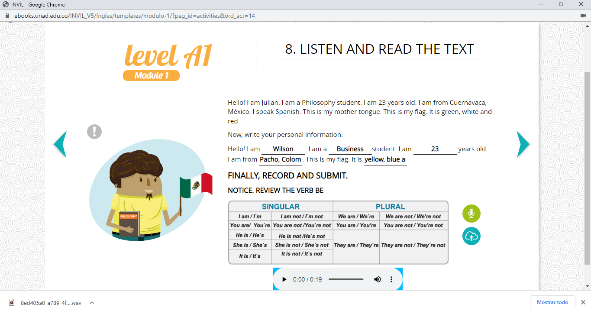
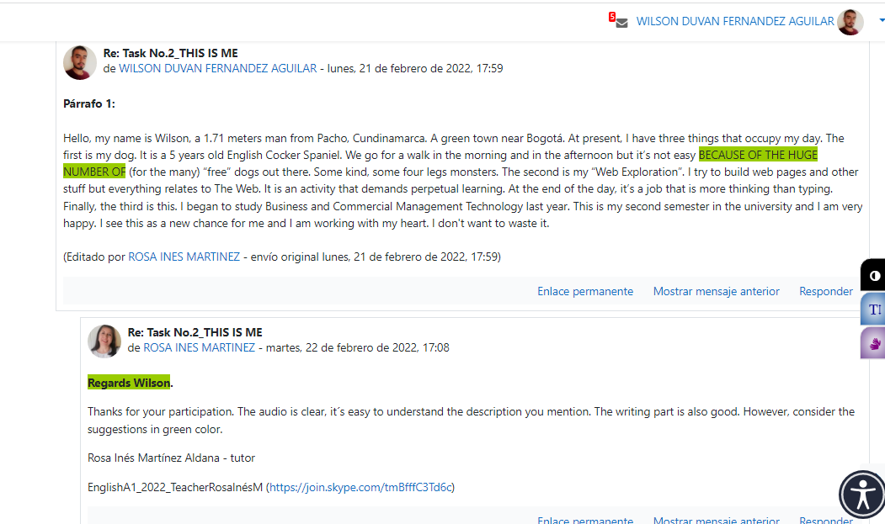

This is me
Stage 1
Stage 2-3
Hello, my name is Duvan, a 1.71 meters man from Pacho, Cundinamarca. A green town near Bogotá. At present, I have three things that occupy my day. The first is my dog. It is a 5 years old English Cocker Spaniel. We go for a walk in the morning and in the afternoon but it’s not easy for the many “free” dogs out there. Some kind, some four legs monsters. The second is my “Web Exploration”. I try to build web pages and other stuff but everything relates to The Web. It is an activity that demands perpetual learning. At the end of the day, it’s a job that is more thinking than typing. Finally, the third is this. I began to study Business and Commercial Management Technology last year. This is my second semester in the university and I am very happy. I see this as a new chance for me and I am working with my heart. I don't want to waste it.
My town is known as the orange capital of Colombia. Here, I live in an apartment located 45 minutes from the urban centre, if you are walking. I live with my mother, my brother and my dog. Despite the fact that the apartment it's not so big, it’s really nice to live here. It is on the last floor of the tower, so it has a beautiful view. It has a kitchen, a living room, a balcony, two bathrooms and three bedrooms.
My routine is the following. I get up at six o’clock. Then I eat breakfast at seven o’clock. Next, I turn on my computer, I connect to the internet and I’m at “my study space”. I study from home. Later, usually at one o’clock I have lunch. As a result of studying this way, I don’t have a schedule. Finally, when I finish my homework for the day I usually go for a walk. I return at 8:00 p.m. for dinner and go to bed one hour later. On weekends I do nothing special. Probably I watch more movies.
Espacios de Aprendizaje
Stage 5
Autoevaluación: reflexión y crecimiento personal.
- Sí, estudié y aprendí los temas sugeridos del E-book.
- Si, participe en el foro dentro de los tiempos indicados.
- Participé en el foro de esta tarea.
- El desarrollo de un texto básico en inglés.
- Si, es importante. Porque es necesario tener unas buenas bases desde las cuales construir.
- Aporta mucho. No solamente a futuro en cuanto a oportunidades laborales sino también en el hecho de poder comenzar a acceder a información.
Reflexión final: Mi desempeño fue bueno aunque creo que puedo intentar tener una mayor interacción con mis compañeros.
Calificación de autoevaluación: 10.